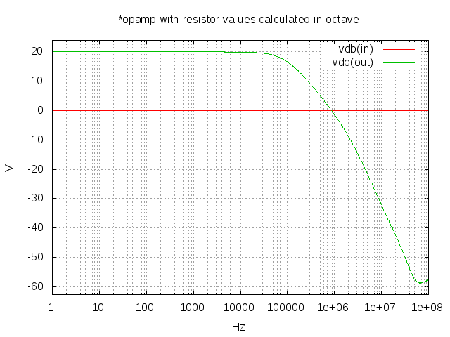

Tiago Oliveira Weber
Integrate your Circuit Design Flow and Reports: Demonstration of NGSPICE and OCTAVE/MATLAB interaction within EMACS
by Tiago Oliveira Weber
Can you imagine being able to scratch new design ideas, perform calculations, execute circuit simulations, calculate some more based on the results and generate reports, all in the same place? Well, you can stop imagining and start working like crazy to develop your electric/electronic project on EMACS.
Recently, I've made a blog post introducing ob-spice, which is a simple language extension to ob-babel that I developed to be able to simulate NGSPICE within EMACS. In the present post I will show how we can use ob-spice to perform interaction between NGSPICE, OCTAVE (or MATLAB) and any other language of our interest. While the experienced org-mode user would already assume this interaction possible from ob-babel features, it is the first demonstration of ob-spice receiving vector inputs (a new feature to ob-spice) and producing outputs back to other languages.
In our example we will design a simple opamp inverting topology. For that purpose, we will calculate the resistor values in OCTAVE/MATLAB, pass the values to NGSPICE and measure the results so they can be used back in OCTAVE/MATLAB to calculate the error between the ideal response and the simulated one. The error will be due to the opamp characteristics and limitations (for this example we will use the LM741 spice model from National Semiconductors).
Although this is a simple design and simulation, let us use this case to get a grip about the process. From there on, you will be able to use the basic idea to develop much more complex design and simulation cases.
Procedure
In order to better illustrate the procedure, I will show the header of each code-block. This would not be necessary in a normal report.
We will define as our design specification that the inverting opamp topology shall have a gain of -10.
Calculating the Resistors Values in OCTAVE/MATLAB
First we want to calculate the value of our resistors. Let assume resistor R1 is 10k, and then calculate R2 in OCTAVE:
#+NAME: design_variables #+BEGIN_SRC octave :results drawer :exports both
gain=-10; r1=10e3; r2 = -gain*r1; ans = [gain, r1, r2];
| -10 | 10000 | 100000 |
What we have now is a vector with the gain and the resistor values. No rocket science on these calculations, but as we are using OCTAVE or MATLAB to perform them, you can see that sky is the limit for what we can do.
Simulating the Circuit in NGSPICE
With the vector in a variable we will now use it in a spice netlist to be simulated on NGSPICE.
#+NAME: ngspice_sim #+BEGIN_SRC spice :results drawer :exports both :var design=design_variables file="amplifier_sim"
*Opamp with resistor values calculated in OCTAVE vin in 0 ac 1 sin(0 0.1 100Hz) dc 0 r1 in inn $design[1] r2 inn out $design[2] *EOpamp out 0 0 inn 1000 xamp1 0 inn vdd vss out lm741/ns vdd vdd 0 2.5 vss vss 0 -2.5 .include spice_library/LM741.MOD *.tran 0.1ms 0.05s .ac dec 100 1 100e6 .end .control run set gnuplot_terminal=png let gain = v(out)/v(in) meas ac gain_dc find gain at=1 meas ac gain_at_100k find gain at=100k echo "$&gain_dc,$&gain_at_100k" > $file.txt gnuplot $file vdb(in) vdb(out) .endc
| -9.99943 | -4.32609 |  |
The simulation had 2 measurement outputs (the DC gain of the circuit and the gain at 500 kHz) and one image (the input and output over frequency in dB). The importance thing to notice here is that you can produce multiple outputs. The $file is an important variable on ob-spice because it tells the extension where to look for the results. For textual outputs, you should use "echo" to generate comma separated values based on measurements and output them to $file.txt, like the example below:
echo "$&var1,$&var2,$&var3" > $file.txt
For plot, you use "gnuplot $file signal_names":
gnuplot $file vdb(in) vdb(out)
You can check the ngspice manual for more information on how to use ngspice commands.
Calculate the error between ideal and simulated on OCTAVE/MATLAB
We will now get the results from the simulation back to OCTAVE in order to calculate the error between ideal and simulated.
#+NAME: error_calculation #+BEGIN_SRC octave :results drawer :exports both :var gain_OCTAVE=10 ngspice_results=ngspice_sim[0]
gain_OCTAVE = design_variables(1); gain_ngspice = str2num(gain_ngspice) error_absolute = abs((gain_OCTAVE-gain_ngspice)) error_percentage = abs(error_absolute/gain_OCTAVE) ans = [error_absolute,error_percentage];
| 0.0005699999999997374 | 5.699999999997374e-05 |
And voilà, you have now your DC gain error calculated.
Present the Results
You can present the result directly in your text with an inline code-block or in fancier approaches, like creating a table as below (where I used python to print the results).
#+BEGIN_SRC python :results output drawer :exports results :var vi=design_variables ngspice_sim_var=ngspice_sim[0;0] error_calculation_var=error_cal
print "|-------------------------+--------|" print "| |Gain |" print "| Ideal (specification) |%.5f V/V|" %float(vi[0][0]) print "| Simulated (NGSPICE) |%.5f V/V|" %float(ngspice_sim_var) print "| Absolute Error (OCTAVE) |%.2g |" %float(error_calculation_var[0][0]) print "| Relative Error (OCTAVE) |%.2g %% |" %float(error_calculation_var[0][1]) print "|-------------------------+--------|"